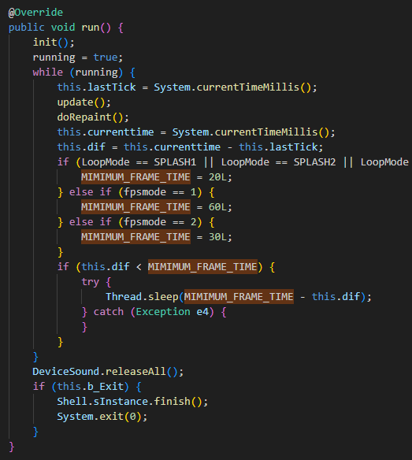
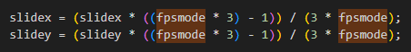
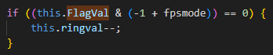
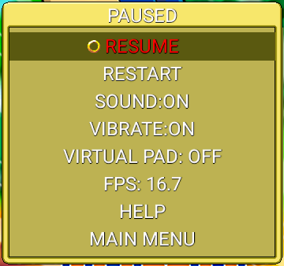
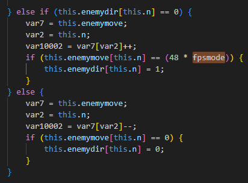
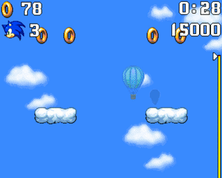

Frame Rate Increase
Introduction
The goal of this project is to improve the higher frame rate experience of the Sonic Jump's Android port by solving the different flaws that Sonic Jump Revival currently have.
Sonic Jump Revival introduces a higher frame rate (33.3fps) to make the game offering a smoother gameplay experience, but some players have reported slowdowns when playing the game at a higher frame rate.
This page explains how the frame rate increase has been implemented and the reasons for the differet flaws this feature has.
If you have enough experience with Java/Smali programming and would like to give some help for this project, you can contact Furrican via the Contact page.
How the game works
Before starting
Before explaning how the higher frame rate is implemented, it is important to understand the context of this project.
The Android port of Sonic Jump is designed to run exclusively at 16.7fps.
If we just increase the frame rate without any other modifications, the game will run too fast.
To make the frame rate increase project possible, more modifications, variables and conditions in the source code are added in order for the game to run smoothly while maintaining its accurate speed.
In the source code, the important game functionality takes place in the Game_Draw file.
The 3 variables you need to know are MIMIMUM_FRAME_TIME (for the frame rate), fpsmode (for calculations based on the frame rate) and FlagVal (for animation frame delays).
MIMIMUM_FRAME_TIME
The MIMIMUM_FRAME_TIME variable is used in the run() method to determines the frame rate.
The frame rate is calculated in this way: 1000 / MIMIMUM_FRAME_TIME.
For instance, when MIMIMUM_FRAME_TIME equals 30L, this means 1000 / 30 = 33.3333333fps.

In the run() method, there are conditions where MIMIMUM_FRAME_TIME is set to a number.
During the loading screen, the game runs at 50fps.
Outside of that, the game either runs at 33.3fps or 16.7fps depending on if fpsmode is equal 2 or 1 respectively.
fpsmode
The fpsmode variable affects other variables and calculations (from character speed, animations, timers, and more...) for the game speed to match the frame rate.
This variable is used throughout the code of the Game_Draw file.

For example, this image above shows the code where the game menus appear with sliding animations.
As you can see, the fpsmode variable is added into the calculations so the game menus move at the same speed despite the frame rate differences.
FlagVal
The FlagVal variable is used to animate certain graphics to blink or change sprites once every number of frames.
In the source code of Sonic Jump Revival, the FlagVal variable is also used to delay animation frames to prevent them from being animated too fast if the game runs at 33.3fps.
In all conditions, the FlagVal variable is accompanied with the fpsmode variable in order for the animation frames to match the game speed based on the frame rate.

Let's take the ring animation used during menus for example.
As you can see, a condition featuring the FlagVal and fpsmode variables is used to animate the ring sprite once every number of frames.
The number of frames is determined by a calculation with the fpsmode value.
In this example, if fpsmode equals 2 (33.3fps), then this condition means that the ring sprite animates once every 2 frames at 33.3fps.
This condition allows for the ring animation to behave exactly like in 16.7fps, where the ring sprite animates once every 1 frame at 16.7fps.
Design flaws
Movable object placements
The first flaw is a frame rate compatibility issue related to the movable object placements (moving platforms and badniks).

If you change the FPS option from the pause menu, you may notice that the RESUME option is disabled and is highlighted in red.
The reason for this is due to the enemy placements being determined by the fpsmode variable.
Basically, if you change the frame rate during the pause menu, the movable object placements are altered.
Instead of making the movable objects move at a traveled distance frame by frame, the fpsmode variable determines the onscreen position and the maximum distance those objects can travel until turning around.
Both the ScaleBlit() and the CentreScaleBlit() methods determine the position of those movable objects.
They contain the fpsmode variable to add to the multiplcation of the onscreen object placements.

And to determine the farthest distance of the movable objects, the fpsmode variable is used so the objects have to move twice as far when playing at 33.3fps.
The compensation the game currently has is a variable named ResumeAvailable.
This variable prevents players from resuming the stage when switching to the other frame rate.
Boss chains and spike obstacles
Another frame rate compatibility issue is with the bosses.

You see, while the Eggman machines move smoothly at 33.3fps, the chains and spike obstacles do not.
The reason for this is due to how complicated it is to calculate the positions and movement speed of those objects.
The chains and spike obstacles logic are located in the rotatechain() method and the ENEMY_BOSS case of the ProcessGame() method.
The rotatechain() method is where the chains and spike obstacles positions are calculated, whereas the ENEMY_BOSS case makes those objects move based on the animation logic.
To compensate, conditions featuring the FlagVal and fpsmode variables are used to make the chains and spike obstacles move once every 2 frames when playing at 33.3fps.
Slowdowns
The biggest issue that frame rate increase brings up are the slowdowns.
After experimenting with higher frame rate gameplay, the issue of slowdowns has been discovered when testing the game at 33.3fps.
This slowdown problem is especially noticable during Jungle Zone.
At first, it is simply thought that the devices of certain players are not powerful enough to run the game at a higher frame rate.
But what is interesting is that, thanks to the multi-screen orientation feature, the slowdown is less noticable if you play the game on landscape view.
As it turns out, one key factor of the slowdown to occur are the graphics.
You see, older mobile games lack modern hardware optimizations and are not compiled with modern multi-threaded rendering in mind.
The CPU gets overwhelmed trying to draw millions of pixels on screen frame by frame based on your screen resolution, even though the game canvas only needs a resolution of 360x640 pixels.
Because of this, rendering so many frames so many times than the intended frame rate may cause the device to run at its maximum capacity.
This also may cause the device to quickly heat up, trigerring thermal throttling and quick battery draining.
The underlying physics and gameplay loop require 60 internal computing cycles per second (hence why the MIMIMUM_FRAME_TIME variable was 60L by default) to advance time normally.
But because of the software rendering issue, the CPU can still only calculate approximately 16 updates per second.
Let's say you want the game to run at 60fps.
If you force the display output to a smooth 60fps but limit the execution speed, the game engine spaces out those 16.7 frames over a full 60-frame timeline.
The game looks incredibly smooth because there is no stuttering, but everything moves in slow motion.
The time literally slows down by a huge percentage because the game takes nearly 4 seconds of real time to calculate one second of in-game time.
Possible solutions
To sum up
Before getting into the possible solutions, here is a small rundown of what issues to resolve for this project:
- Movable object placements and movement speed being determined by the fpsmode variable, making frame rate compatibility issues.
- Boss chains and spike obstacles moving once every 2 frames when playing at 33.3fps, due to complications regarding their positions and movement speed.
- Slowdowns occuring when playing on weaker hardware or higher screen resolution (especially during Jungle Zone).
Fixing the frame rate compatibility issues
For the movable object placements, the var10002 = var7[var2]++; and var10002 = var7[var2]--; lines should be replaced so the fpsmode variable should determine the traveled distance frame by frame.
The problem is that the other variables (var10002, var7, var2, etc...) don't have the same data type.
Therefore, it is more complicated to change those pieces of code.
Whereas the boss chains and spike obstacles, it is possible to improve their movement speed by better understanding the logic behind the rotatechain() method and the ENEMY_BOSS case of the ProcessGame() method.
Getting rid the slowdowns
The slowdowns are the most important issue to be resolved.
There are a few theories on how to get rid of the slowdowns.
Since we know that the slowdowns occur primarily due to the game being drawn on screen frame by frame, we have to make the graphics so it doesn't cost too much performance.
Either the screen resolution of the device has to be modified when opening the game application, or the game has to be optimized by implementing a graphics API.
Conclusion
The frame rate increasing is a great project, but it is not without flaws.
The discovery of the slowdowns when playing on higher frame rates than intended was interesting to better understand how old mobile games were designed.
With all that said, if you are an experimented Java programmer and have the patience, you can give some help to improve this project!